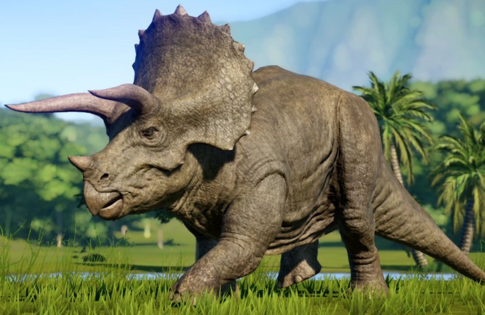

Triceratops ( / t r aɪ ˈ s ɛr ə t ɒ p s / coba- SERR -ə-tops ; [ 1] menyala. 'wajah bertanduk tiga') adalah genus dinosaurus ceratopsian chasmosaurine yang hidup pada akhirzaman Maastrichtian periode Kapur Akhir, sekitar 68 hingga 66 juta tahun yang lalu di tempat yang sekarang menjadi Amerika Utara bagian barat. Ini adalah salah satu dinosaurus non-unggas terakhir yang diketahui dan hidup hingga peristiwa kepunahan Kapur–Paleogen. 66 juta tahun yang lalu. Nama Triceratops , yang secara harfiah berarti 'wajah bertanduk tiga', berasal dari kata Yunani trí- ( τρί- ) yang berarti 'tiga', kéras ( κέρας ) yang berarti 'tanduk', dan ṓps ( ὤψ ) yang berarti 'wajah'.